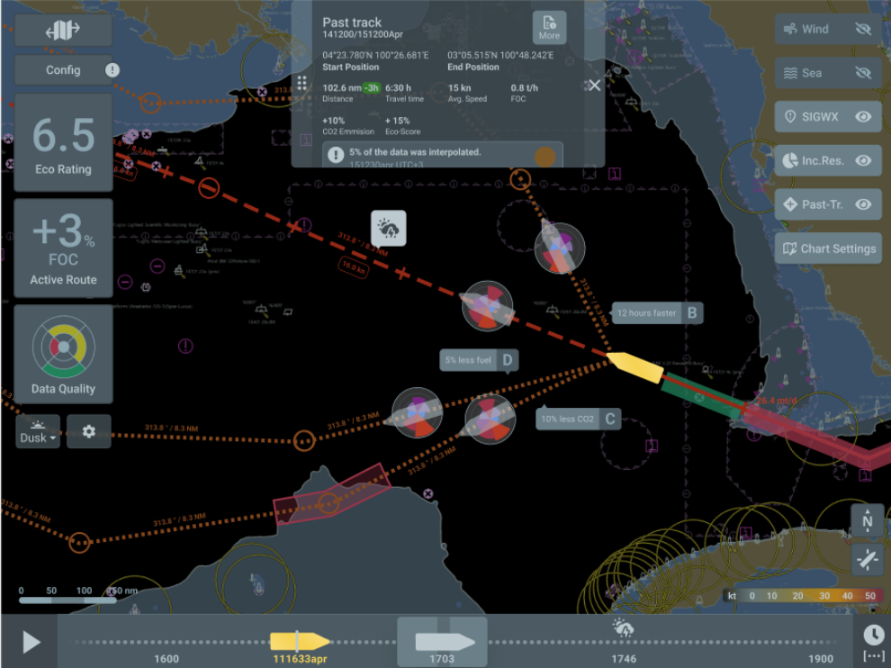
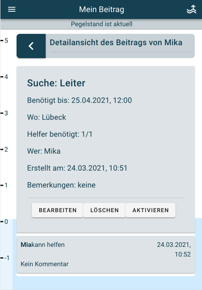

Konzeption und Prototyping einer Seekarte für ein energieeffizientes Decision Support System. Entwicklung und Pflege visueller Design Guidelines für das MariData-Interface.

Konzeption und Gestaltung eines KI-gestützten Dashboards von der Anforderungsanalyse bis zum interaktiven Prototypen. User Research mit Interviews, Personas und User Journeys.
Erweiterung einer Hochwasser-App um eine Nachbarschaftshilfe-Komponente zur Koordination von Hilfe in Krisensituationen. Von Wireframes über Usability-Tests bis zum fertigen Prototypen.
